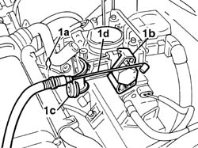
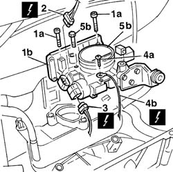
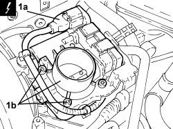

1056B14 THROTTLE CASE - R + R
- Path
- Procedures > 10 ENGINE > 1056 PETROL INJECTION SYSTEM > 1056B MULTI-POINT INJECTION SYSTEM (MPI) > 1056B14 THROTTLE CASE - R + R
- Kind
- repair procedure (removal / refitting; the operation number is the code)
- Applies to
- engines: 1.2 8v, 1.4 8v; all production periods
- Interactive page
- https://sloeber94.github.io/elrnDB-fDbl/en/#/2584241
Applies to: engines: 1.2 8v; all production periods
 Removing
Removing
 Refitting
RefittingDisconnect the negative battery terminal.
Op. 1048A10 AIR FILTER ASSEMBLY - R.R.
1. Lift clip (1a), release the cable from the attachment (1b) on the throttle control device and bracket (1c), then place accelerator cable (1d) aside.

Applies to: engines: 1.2 8v; all production periods
1. Undo bolts (1a) and move aside injection (1b).
2. Disconnect the throttle valve position sensor electrical connector.
Description | Connector | |
|---|---|---|
2 | Throttle position sensor |
3. Disconnect the electrical connector for the engine idle speed actuator.
Description | Connector | |
|---|---|---|
3 | Idle actuator |
4. Undo the fixing bolt (4a) and disconnect the injection control unit earth lead (4b).
Description | Connector | |
|---|---|---|
4b | Injection control unit earth |
5. Undo the fixing bolts (5a) and remove the throttle body (5b).

Applies to: engines: 1.2 8v; all production periods
Refitting
RemovingPosition the throttle body and tighten the fixing bolts.
Tighten the throttle body bolts to torque.
Fastening | Component | dia | Value (daNm) | |
|---|---|---|---|---|
- | Bolt | BUTTERFLY VALVE CASE/S (MPI) | M6 | 0.7 |
Connect the injection control unit earth lead and tighten the fixing bolt.
Description | Connector | |
|---|---|---|
- | Injection control unit earth |
Disconnect the electrical connector for the engine idle speed actuator.
Description | Connector | |
|---|---|---|
- | Idle actuator |
Disconnect the throttle valve position sensor electrical connector.
Description | Connector | |
|---|---|---|
- | Throttle position sensor |
Position the injection control unit and secure it using the bolts.
Replace the accelerator cable on the bracket and fit to the throttle valve.
Connect the negative battery terminal.
Op. 1068A10 ACCELERATOR PEDAL CONTROL - CHECK, ADJUST IF NECESSARY AND LUBRICATE
Applies to: engines: 1.4 8v; all production periods
Removing
Refitting- Disconnect the negative battery terminal.
Op. 1048A10 AIR FILTER ASSEMBLY - R.R.
1. Disconnect electrical connection (1a), unscrew the bolts and remove the throttle body (1b).
Description | Connector | |
|---|---|---|
1a | Integrated throttle casing actuator |

Applies to: engines: 1.4 8v; all production periods
Refitting
Removing- Refit the throttle body in its seat, secure with bolts and connect the electrical connection.
Op. 1048A10 AIR FILTER ASSEMBLY - R.R.
- Connect the negative battery terminal.
Topics linked from this page (6)
- 1048A10 air cleaner filtering element - replace
- 1068A10 accelerator pedal control - check, adjust if necessary and lubricate
- C60 EARTH ON ENGINE ( ENGINE )
- K56 THROTTLE POSITION SENSOR
- N74 IDLE ACTUATOR
- N075 THROTTLE BODY ACTUATOR